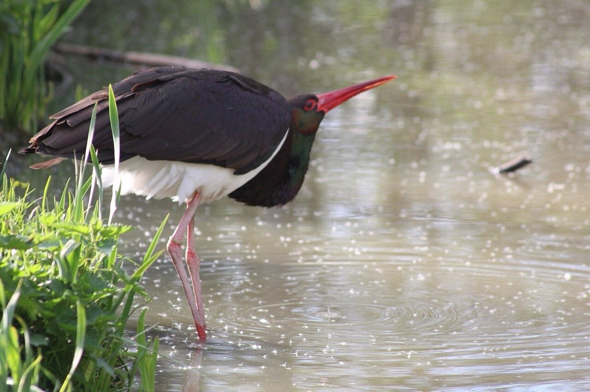
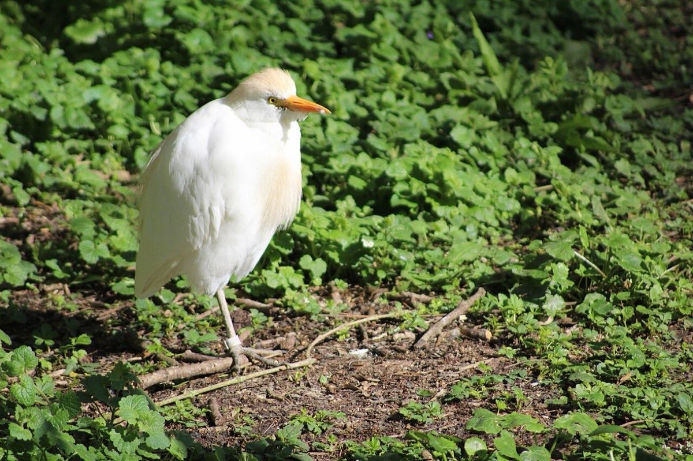
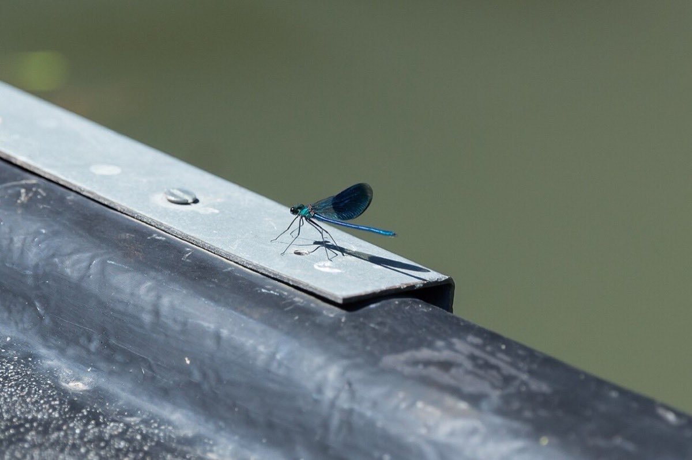
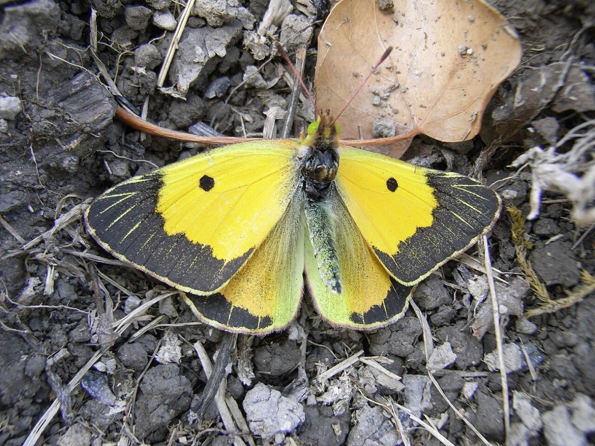
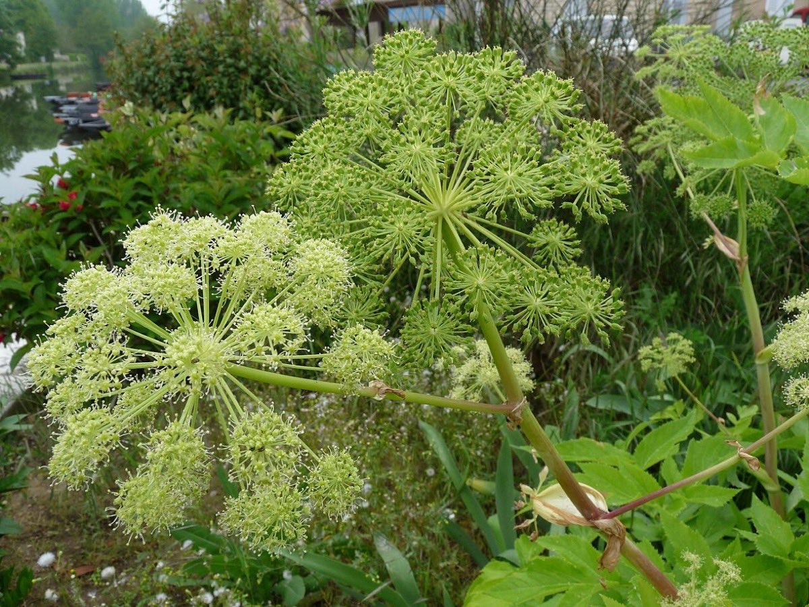
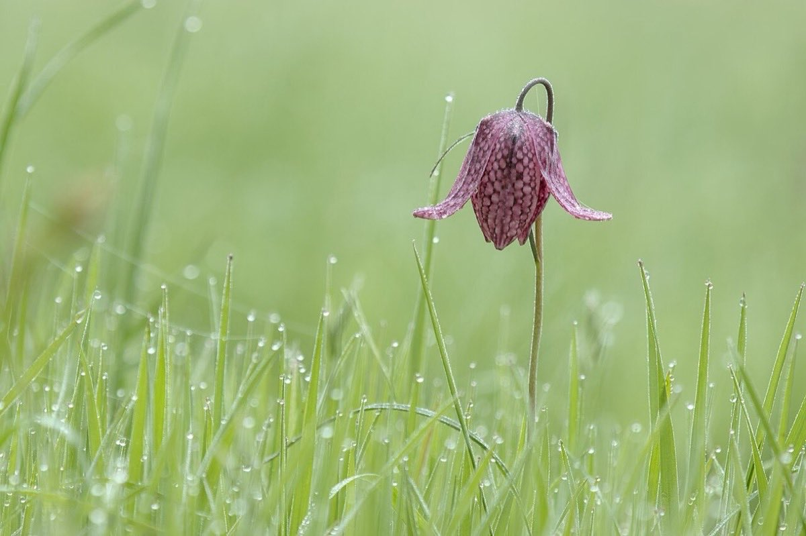

Biodiversité
Entre terre et eau, le marais offre refuge, nourriture et halte à une multitude d'espèces.
Situé sur la principale voie de migration de la façade atlantique, le Marais poitevin accueille au fil des saisons des oiseaux nicheurs, hivernants et de passage. Ses eaux et ses berges abritent aussi mammifères, poissons, amphibiens et insectes.

Revenue nicher dans le marais, elle arpente les prairies humides à la recherche d'amphibiens, d'insectes et de petits rongeurs.
Greenbox, CC BY-SA 4.0
Plus discrète et bien plus rare, elle fait halte dans les zones humides lors de ses migrations entre l'Europe et l'Afrique.
Greenbox, CC BY 4.0
Compagnon des troupeaux, il profite des insectes que le bétail dérange dans les prairies pâturées : l'élevage extensif est son allié.
Greenbox, CC BY 4.0Ces trois oiseaux ont été photographiés au parc ornithologique « Les Oiseaux du Marais poitevin », à Saint-Hilaire-la-Palud.
Longtemps chassée, la loutre a reconquis les canaux du marais. Son retour est le signe d'une eau de qualité et de berges préservées ; elle reste vulnérable aux collisions routières et à la dégradation des milieux.
Née en mer des Sargasses, elle remonte les canaux du marais pour y grandir. Espèce emblématique de la pêche locale, elle est aujourd'hui en danger critique d'extinction.
Caloptéryx aux ailes bleutées, agrions, souci, amaryllis : les insectes des berges et des prairies fleuries nourrissent oiseaux, poissons et chauves-souris.


Prairies inondables, berges, fossés et boisements humides : chaque milieu du marais a sa flore propre, adaptée à l'alternance des hautes et des basses eaux.

Au printemps, ses fleurs jaunes bordent les conches et les fossés. Ses racines contribuent à épurer l'eau.
Myrabella, CC BY-SA 3.0
Grande ombellifère des lieux humides, elle est cultivée depuis des siècles autour de Niort, où on la confit. Ici à Coulon.
Ji-Elle, CC BY-SA 3.0
Sa clochette en damier fleurit en mars-avril dans les prairies humides naturelles, devenues rares. Elle disparaît dès que la prairie est drainée ou retournée.
Gllawm, CC BY-SA 4.0L'été, les lentilles d'eau couvrent les conches d'un tapis vert qui a donné son nom à la Venise verte. Au-dessus, les frênes têtards, les aulnes et les peupliers forment des voûtes qui gardent la fraîcheur.
Une espèce observée, un nid, un couloir de passage, une prairie fleurie : ce sont les habitants qui connaissent le mieux le territoire. Signalez-nous ce que vous voyez — ces observations aident à mieux le connaître et à mieux le défendre.